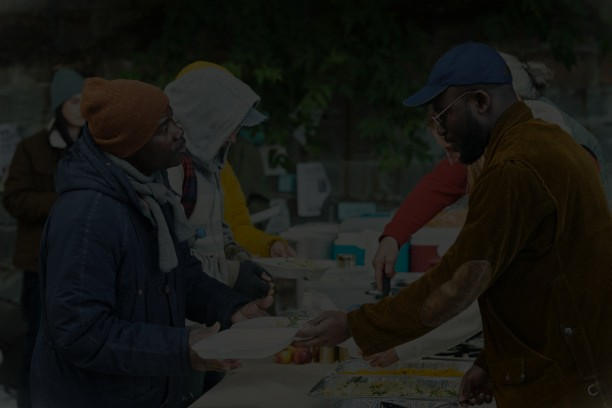

Transforming Data into Actionable Insights
Horizon Insight Research supports NGOs, Government Institutions, and CBOs in Turkana through reliable data solutions, research, and monitoring systems.
Partner With UsWho We Are
Horizon Insight Research is a data and information research organization dedicated to helping institutions make informed, evidence-based decisions through reliable, high-quality data solutions. We focus on transforming data into actionable insights that support development impact, organizational effectiveness, and sustainable growth.

Our Services
We provide professional research and data solutions that help organizations make informed, evidence-based decisions.
Data Collection
Field surveys, digital data capture, and monitoring systems.
Data Analysis & Interpretation
Transforming raw data into meaningful insights for decision-making.
Research Reporting & Visualization
Clear reports, dashboards, and visual presentations of findings.
Monitoring, Evaluation & Learning (MEL)
Performance tracking, evaluation frameworks, and learning systems.
Data Management Systems
Organizational data systems, storage, and structured data management.
Key Focus Areas
Our work focuses on high-impact development areas where reliable data drives sustainable change.
Humanitarian Response
Supporting emergency and resilience programs with real-time data insights.
Education
Research and monitoring systems to improve access and learning outcomes.
Youth Empowerment
Building youth research capacity and digital skills for sustainable growth.
Health & Nutrition
Data systems that strengthen community health programs and interventions.
Livelihoods
Evidence-based research supporting economic empowerment initiatives.
Gender & Inclusion
Inclusive research approaches ensuring equitable participation.
Climate & Environment
Data-driven insights for climate resilience and environmental sustainability.
Governance & Policy
Strengthening accountability through research and policy analysis.
Research
Explore some of our key research projects.
Baseline Assessment Study
Monitoring & Evaluation Report
Data Visualization Dashboard
Youth Empowerment Study
Impact in Numbers
25+
Surveys & Assessments Conducted
600+
Youth Trained in Digital Skills
1,200+
Community Members Reached
15+
Partner Organizations Supported
Our Team
Member Name
Role Title
Member Name
Role Title
Member Name
Role Title
Member Name
Role Title
Member Name
Role Title
Member Name
Role Title
Member Name
Role Title
Member Name
Role Title
Contact Us
Get in Touch
Email: info@hir-kakuma.org
Location: Kakuma 2, Turkana County, Kenya
We welcome inquiries from potential partners, researchers, and community members interested in collaborating.